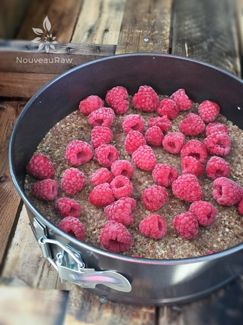
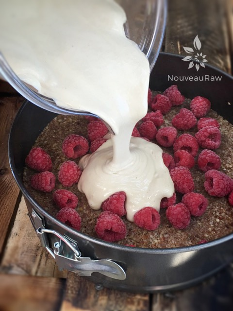
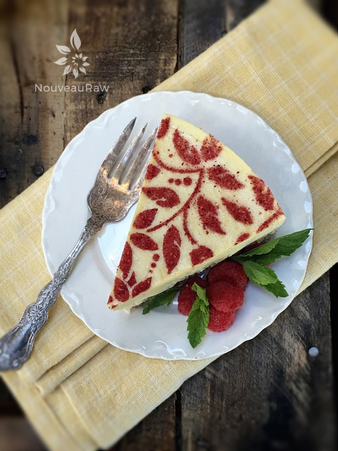

Raspberry Lemon Cheesecake

~ raw, vegan, gluten-free ~
The fresh, light, delicate flavor of this cheesecake is melt in your mouth goodness. The pairing of the sweet raspberries along with the tart lemon is just enough to make your mouth water. Actually, your mouth isn’t watering… it is crying tears of joy.
You can decorate the top of the cheesecake any way that you would like. I have made this recipe many times over and tend to decorate it differently each time. In the photos provided, I laid a stencil over the cheesecake and shook fresh ground freeze-dried raspberries over it. Once the stencil is removed, a beautiful pattern was left behind. Then I accented it with fresh and freeze-dried raspberries, lemon rind curls, and fresh mint leaves. It took this cheesecake to a whole new level.
The case of this cheesecake is made with soaked cashews. If you are new to making raw cheesecakes…. cashews are often the preferred base because they are what gives the dessert that amazing mouth-feel. The key is to have a high-powered blender, making sure to break them down into the creamiest sensation that you have ever experienced.
For the firm structure, coconut oil is used. Once the cheesecake is chilled, the coconut oil helps to tighten things up since it hardens below 76 degrees (F). You don’t want to skip this ingredient. You see each ingredient plays an important role. Well, two actually because the important goal is to create a healthier dessert.
Why I add sunflower lecithin.
I always get asked why I use lecithin and if one can just omit it. I will explain why but I will first say that, yes, you can omit but I personally don’t recommend doing so. Sunflower lecithin is made up of essential fatty acids and B vitamins. It helps to support the healthy function of the brain, nervous system, and cell membranes. It also lubricates joints; helps break up cholesterol in the body.
It comes in two forms, powder and liquid. I prefer the powdered sunflower lecithin because it doesn’t affect the color as much as the liquid which is a deep amber color. Setting aside all the nutritional benefits, it is a natural emulsifier that binds the fats from nuts with water creating a creamy consistency.
I hope you enjoy this amazing recipe. Be sure to comment below and have a blessed day, amie sue
yields 9″ Springform pan
Crust:
- 2 cups (246 g) raw almonds, soaked & dehydrated
- 1/8 tsp Himalayan pink salt
- 1/2 cup (138 g) date paste
- 1 tsp vanilla extract
- 1 Tbsp lemon zest
- 1-pint organic raspberries
Cheesecake filling:
- 3 cups raw cashews, soaked 2+ hours
- 1 1/2 cups almond milk
- 3/4 cup raw light agave nectar or maple syrup
- 1 cup fresh lemon juice
- 2 tsp vanilla extract
- 1/4 tsp Himalayan pink salt
- 3 Tbsp lecithin, powder or liquid
- 3/4 cup coconut oil, melted
- 2 pints organic raspberries, for decoration (if desired)
Preparation:
Crust:
- In a food processor, fitted with the “S” blade, combine the almonds and salt. Process until the almonds reach a small crumble.
- Remove the lid and add the date paste, vanilla, and lemon zest. Process until the ingredients stick together when pinched.
- Assemble the springform pan with the bottom facing up. The opposite way from how it comes assembled.
- Line the base with plastic wrap.
- This will help you when removing the cheesecake from the pan, not having to fight with the lip).
- Lightly grease the sides of the pan with coconut oil.
- Distribute the crust evenly on the bottom of the pan, using even and gentle pressure.
- If you press too hard it might stick, making it hard to remove slices.
- You can either just make the crust on the bottom of the pan or you can also bring it up the sides. It is up to you.
- Place a layer of raspberries on the bottom of the crust.
- Set aside while you make the cheesecake batter.
- Drain the soaked cashews and discard the soak water. Place in a high-speed blender.
- In a high-powered blender combine the; cashews, milk, sweetener, lemon juice, vanilla, and salt together.
- Due to the volume and the creamy texture that we are going after, it is important to use a high-powered blender. It could be too taxing on a lower-end model.
- Blend until the filling is creamy smooth. You shouldn’t detect any grit. If you do, keep blending.
- This process can take 2-4 minutes, depending on the strength of the blender. Keep your hand cupped around the base of the blender carafe to feel for warmth. If the batter is getting too warm. Stop the machine and let it cool. Then proceed once cooled.
- You can use a different liquid sweetener if you are not comfortable with agave. Just be aware of the different flavors and colors that the sweetener might impart in the cake.
- With a vortex going in the blender, drizzle in the coconut oil and then add the lecithin. Blend just long enough to incorporate everything together. Don’t over-process. The batter will start to thicken.
- What is a vortex? Look into the container from the top and slowly increase the speed from low to high, the batter will form a small vortex (or hole) in the center. High-powered machines have containers that are designed to create a controlled vortex, systematically folding ingredients back to the blades for smoother blends and faster processing… instead of just spinning ingredients around, hoping they find their way to the blades.
- If your machine isn’t powerful enough or built to do this, you may need to stop the unit often to scrape the sides down.
- Pour the batter into the pan.
- Gently tap the pan on the counter to remove any air bubbles.
- Chill in the freezer for 4-6 hours or until solid and then in the fridge for 12 hours if you want to serve it at a softer texture.
- Once you remove it from the freezer, it’s a good time to remove it from the base of the pan ad transfer it to a serving dish.
- I tend to keep mine frozen until a few hours before serving.
- Store the cheesecake in the fridge for 3-5 days or up to 3 months in the freezer. Be sure that they are well sealed to avoid fridge odors.
- Decorate with extra raspberries.
-

-
After pressing the crust into the pan, place the raspberries on top.
-

-
Pour the cheesecake batter over the top and freeze.

© AmieSue.com